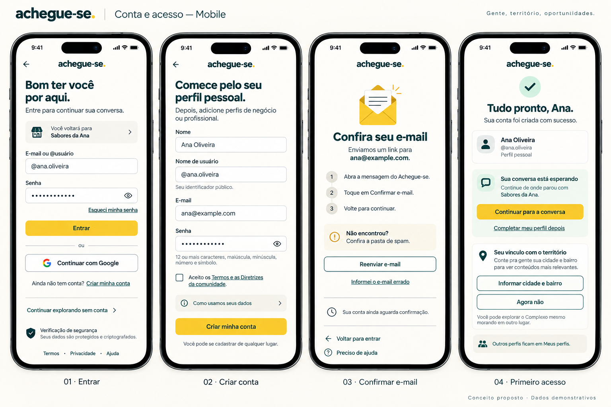
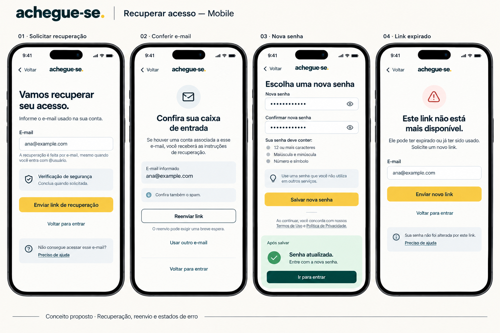
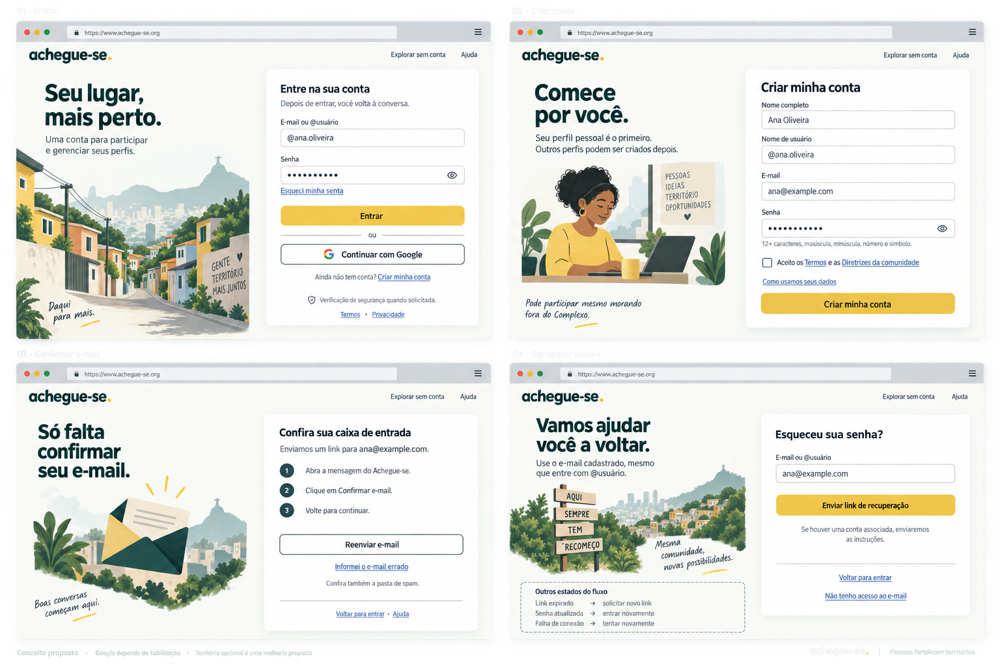
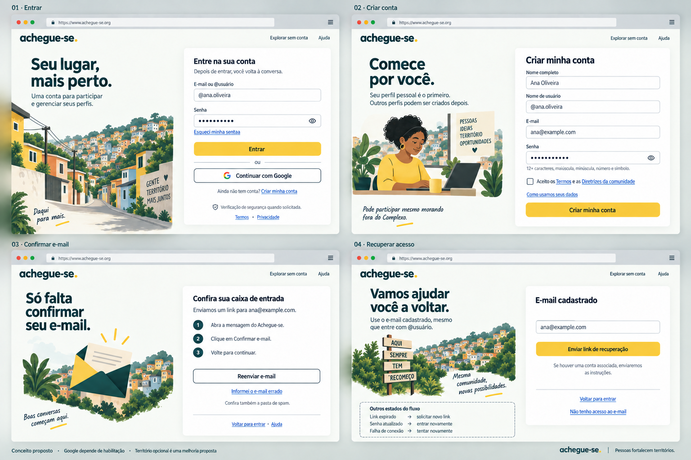

← CatálogoConta e acesso
Entrar, cadastrar, confirmar email e recuperar acesso. Google somente habilitado. Validar senha e redirecionamentos pelos contratos reais.
Documento da página · Registro da revisão

063-acesso-mobile-inicial · Histórico — não aplicar automaticamente 064-acesso-mobile · Referência para revisão
064-acesso-mobile · Referência para revisão
065-recuperacao-mobile · Referência para revisão
066-acesso-desktop-inicial · Histórico — não aplicar automaticamente
067-acesso-desktop · Referência para revisão